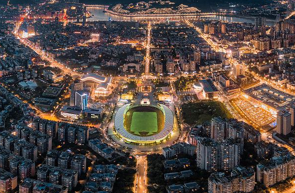

@QA.png)
宜宾,四川省辖地级市,有“万里长江第一城、中国酒都、中国竹都”之称。地处云贵川三省结合部,金沙江、岷江、长江三江交汇处;地形整体西南高、东北低,属中亚热带季风湿润气候,全市森林覆盖率超过46%,空气中负氧离子含量高达47000个/立方厘米(七洞沟),极其适宜人类居住,辖区内长宁县等因此成为著名长寿县。幅员面积13283平方千米,辖3区、7县;2021年常住人口460.5万人。

美丽宜宾的背后
- 是国家确定的沿江城市带区域中心城市
- 是四川培育壮大的七大区域中心城市之一
- 是酒文化城市
- 是四川省委确定的长江上游区域中心城市、全国性综合交通枢纽、四川南向开放枢纽门户
- 是第三批中国特色农产品优势区
- 是省级创新型城市建设
行政区划
宜宾市辖10个行政区划单位(其中市辖区3个县7个)。叙州区,位于四川盆地南缘,川滇两省结合部；翠屏区地处金沙江、岷江、长江三江交汇处,是宜宾市政治、经济、文化中心；南溪区,位于四川省南部,南溪区境内有南溪古街、滨江湿地公园、云台山省级森林公园等景点；江安县是长江之滨,宜宾之东,三市(宜宾、泸州、自贡)之交；长宁县是宜宾市腹心地带，是著名的长寿之乡；高县境内著名景点有阳翰笙故居、张锡龙故居、李硕勋纪念馆等；.筠连县古为南丝绸之路的重要驿站；珙县是川滇黔结合部宜宾半小时经济圈重要组成部分；兴文县是古代僰人繁衍生息和最终消亡之地，四川省苗族聚居人口最多的县 ；屏山县因县东有宝屏山，山如屏障，而得名。
地理环境
宜宾市位于四川省南部,处于川、滇、黔三省结合部,金沙江、岷江、长江汇流地带。地跨北纬27°50'—29°16'、东经103°36'—105°20'。市境东邻泸州市,南接云南昭通地区,西界凉山彝族自治州和乐山市,北靠自贡市,东西最大横距153.2千米,南北最大纵距150.4千米,全市幅员13283平方千米。
- 地形整体呈西南高、东北低态势。
- 南部为四川盆地贫舷带
- 东北部为华蓥山余脉
- 东南侧属四川盆地东岭谷区
- 西北侧属盆中方山丘陵区
自然资源
宜宾市每平方千米年自产水61.45万立方米，加上境内各河流水量,全市年拥有总水量2428.4亿立方米,人平年占有水量为4.68万立方米。但市境地下水总量仅9.67亿立方米,年平每平方千米仅3.1万立方米至15.8万立方米，属较贫乏区。
2000年勘查,宜宾市南岸由于部分单位未合理使用地下水,已出现某些问题。全市水能以三江流域境内段为主。金沙江水能理论储量为157.2万千瓦,岷江91.7万千瓦,长江214.4万千瓦。其余积雨面积在10平方千米以上的中小河流102条,水能储量62.9万千瓦。
交通运输
Railway
铁路
宜宾市拥有众多铁路线路,到2025年前将全部建成,从而成为川南铁路枢纽
Highway
公路
宜宾市拥有内宜高速公路,宜水高速公路,乐宜高速公路,宜泸高速公路,宜叙高速公路,成宜高速公路等。
Aviation
航空
宜宾五粮液机场位于宜宾市翠屏区,距离宜宾市区约11千米,为4C级军民合用运输机场。宜宾五粮液机场拥有一座航站楼,面积为2.4万平方米,建有一条跑道,长度为2600米;设置站坪停机位13个。截至2020年5月,宜宾五粮液机场通航城市21个。
Water transport
水运
宜宾港依托长江、金沙江两条水运主通道,建设以志诚综合作业区为中心,以豆坝、小岸坝、安阜、罗龙、阳春坝5个重大型专用码头为支撑,以20余个区域性客货码头为补充的内河枢纽港体系。